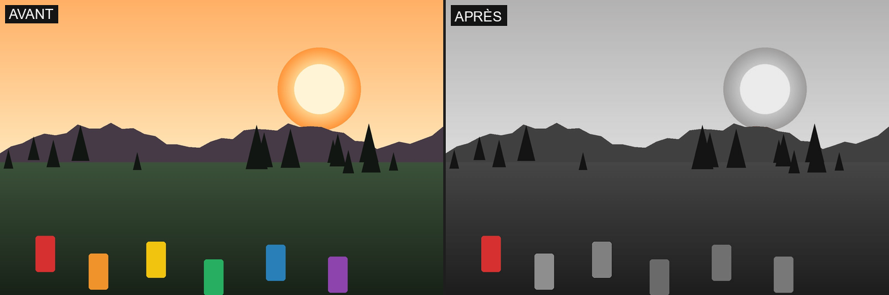
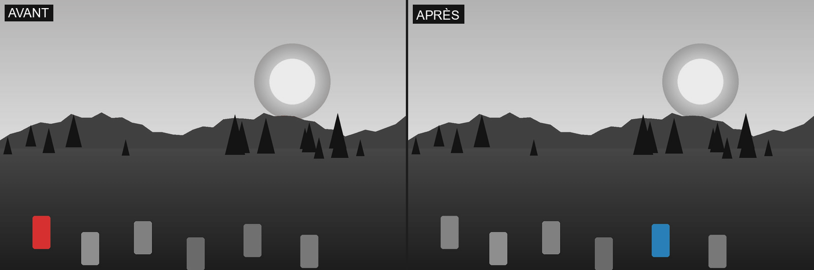
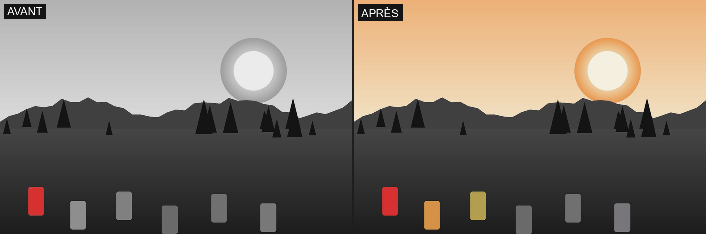
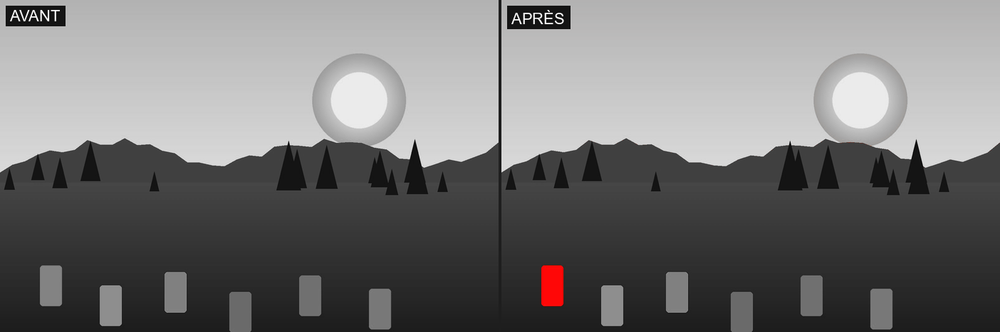
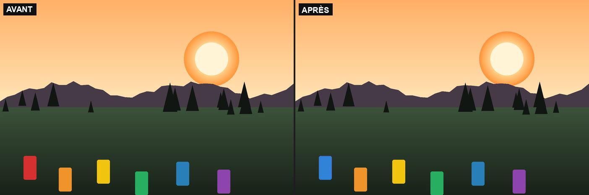
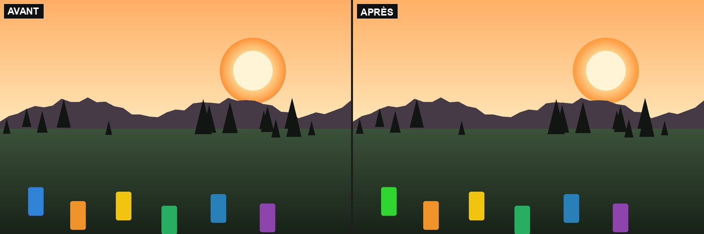
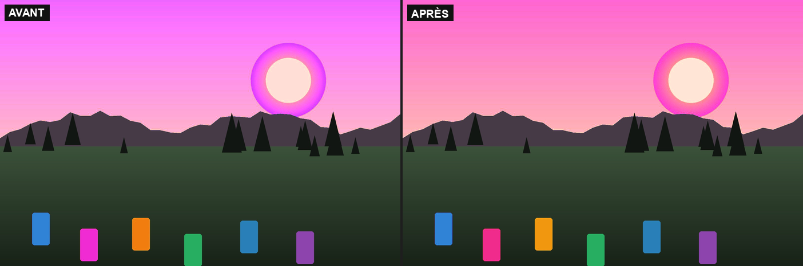
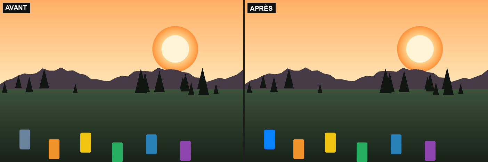
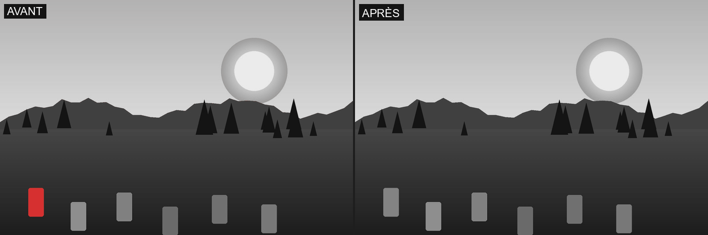

4.3 Color Splash
Moteur : désature l'image entière, à l'exception d'au plus 3 plages de teinte actives simultanément. Une plage est définie par une teinte centrale et un « adoucissement » (demi-largeur en degrés) : le poids de conservation vaut 1 au centre, décroît en cosinus jusqu'à 0 à la limite de l'adoucissement. Les 3 plages se combinent par un maximum (union), jamais une somme, pour qu'un recouvrement entre deux plages ne sursature jamais. Un pixel n'est éligible à la couleur que si sa saturation d'origine dépasse un seuil réglable (évite qu'un pixel presque gris ne bascule en couleur au moindre effleurement d'une plage active).
Substitution de couleur : chaque plage peut en outre déclarer une couleur de remplacement, décrite exactement comme la plage source — teinte, adoucissement, intensité. Quand elle est active, les pixels sélectionnés ne se contentent plus de conserver leur couleur : leur teinte est remplacée. La position d'un pixel à l'intérieur de la fenêtre source est reprojetée proportionnellement dans la fenêtre cible, selon teinte finale = C2 + (teinte − C1) × (F2 / F1), où C/F sont la teinte centrale et l'adoucissement de la plage source (1) et de la plage de remplacement (2). C'est l'adoucissement cible F2 qui décide de la quantité de nuances d'origine qui survivent : à 0° toute la plage s'aplatit sur une teinte unique, à F2 = F1 les nuances sont conservées à l'identique, au-delà elles sont amplifiées. La luminance n'est jamais touchée — c'est ce qui garde une substitution photographique plutôt que peinte. Le déplacement est pondéré par le même poids en cosinus que la conservation : un pixel en bordure de plage ne parcourt qu'une partie du chemin, ce qui fond la transition dans le reste de l'image au lieu de la trancher net. Chaque plage a sa propre couleur de remplacement, et la zone d'application décrite plus bas la contraint spatialement comme elle contraint la conservation.
Vignettes
| Vignette | Effet |
|---|---|
| Neutre | Aucune transformation. |
| Rouge | Conserve les teintes autour de 0° (rouge), ±30° d'adoucissement ; désature tout le reste à 100 %. |
| Orange | Même mécanisme, centré sur 30° (orange). |
| Jaune | Même mécanisme, centré sur 60° (jaune). |
| Vert | Même mécanisme, centré sur 120° (vert). |
| Bleu | Même mécanisme, centré sur 240° (bleu). |
| Violet | Même mécanisme, centré sur 285° (violet). |
| Substitution | Le seul preset qui remplace une couleur au lieu d'en désaturer d'autres : remappe les rouges (0°, fenêtre volontairement large de 60°) vers le bleu (210°) et laisse tout le reste de l'image dans ses couleurs d'origine (désaturation du fond à 0 %). C'est un point d'entrée destiné à être réglé dans le Zoom, pas un rendu fini. |
Les 6 premiers presets ne diffèrent que par la teinte centrale conservée — l'adoucissement (30°), l'intensité de la couleur conservée (100 %) et le seuil de saturation (15 %) restent partout à leur valeur générique. Substitution est le seul à sortir de ce moule : il active une couleur de remplacement et neutralise la désaturation du fond.
Réglages manuels
Le panneau expose une section repliable par intervalle — Intervalle 1, 2, 3 — puis un groupe Réglages globaux. Chaque intervalle contient deux groupes bâtis à l'identique : Couleur (la plage sélectionnée) et Couleur de remplacement (la plage qui s'y substitue). Les deux présentent les mêmes contrôles dans le même ordre — un interrupteur Actif, une roue chromatique (une teinte est cyclique : un curseur linéaire couperait artificiellement le rouge à la jointure 0°/360°, et le rayon de la roue pilote l'intensité), un Adoucissement et une Intensité — la seule différence étant la Zone d'application, portée par la sélection source uniquement. Tout ce qui suit Actif n'apparaît que lorsque le groupe est actif, et le groupe Couleur de remplacement n'apparaît pas du tout tant que l'intervalle est inactif : un remplacement sans sélection n'a rien à remplacer.
Groupe Couleur
- Actif (
range_N_enabled) — active/désactive cette plage (bouton +/×). C'est ce qui permet jusqu'à 3 plages simultanées, chacune avec son propre interrupteur.

- Zone d'application (bouton +/×, par intervalle) — ouvre l'éditeur de contour et limite spatialement l'intervalle à la zone tracée : tout ce qui est en dehors bascule en noir et blanc selon la Désaturation du fond, même si la teinte correspond. Elle contraint aussi bien la conservation que la substitution — c'est pourquoi il n'y en a qu'une par intervalle, et non une par groupe. Le tracé fonctionne exactement comme le Masque du sujet de la ligne Light (sommets déplaçables, double-clic pour supprimer un sommet, « + » sur une arête pour en insérer un, Adoucissement du contour et Inverser). Chaque intervalle a sa propre zone, indépendante des deux autres.
Par défaut aucune zone n'est tracée : l'intervalle s'applique à l'image entière. Le bouton Toute l'image de la barre flottante y revient à tout moment ; fermer l'éditeur avec « × » referme seulement l'outil et conserve la zone.
Les zones ne sont pas enregistrées dans les presets — comme le recadrage ou la correction de perspective, un contour tracé autour d'un sujet n'a pas de sens sur une autre photo. Un preset rechargé applique donc toujours la configuration Color Splash à l'image entière.
- Roue chromatique (
range_N, 0..360°) — position de la teinte centrale conservée pour cette plage. Illustré ici sur l'intervalle 1, rouge (0°) puis bleu (240°).

- Adoucissement (
range_N_feather, 5..90°) — largeur de la transition en cosinus autour de la teinte centrale : étroit = coupure nette vers le gris, large = transition beaucoup plus progressive (davantage de teintes voisines restent partiellement colorées).

- Intensité (
range_N_saturation_boost, 0..200 %) — multiplie la saturation d'origine des pixels conservés par cette plage : en dessous de 100 %, la couleur conservée est atténuée ; au-dessus, elle est intensifiée/sursaturée. Sans effet lorsque le remplacement est actif, qui porte alors sa propre intensité.

Groupe Couleur de remplacement
- Actif (
range_N_target_enabled) — bascule cet intervalle du mode « conserver » au mode « remplacer » (bouton +/×). Inactif, l'intervalle se comporte exactement comme avant : il conserve sa couleur d'origine.

- Roue chromatique (
range_N_target, 0..360°) — teinte centrale de la couleur qui se substitue à la plage. Illustré ici sur l'intervalle 1 (rouge sélectionné), remplacé par du bleu (210°) puis par du vert (120°) ; le reste de l'image ne bouge pas.

- Adoucissement (
range_N_target_feather, 0..90°) — largeur de la plage de teintes cibles, et donc quantité de nuances d'origine conservées : à 0° toutes les teintes sélectionnées visent la même couleur (aplatissement) ; à une valeur égale à l'adoucissement de la source les écarts de teinte d'origine sont reproduits à l'identique ; au-delà ils sont amplifiés. Contrairement à celui de la source, il descend jusqu'à 0° — une fenêtre cible de largeur nulle est un cas utile, alors qu'une fenêtre source de largeur nulle ne sélectionnerait rien. Illustré sur une sélection volontairement large (60°, qui englobe aussi le ciel et le bâtiment orange, comme la figure de l'adoucissement source plus haut) : à gauche 0°, à droite 90°.

- Intensité (
range_N_target_saturation_boost, 0..200 %) — saturation de la couleur de remplacement. Elle prend la place de l'Intensité de la sélection source tant que le remplacement est actif : les deux agissent sur la même saturation, et c'est la couleur de remplacement qui est effectivement à l'écran.

Un pixel n'est déplacé qu'à hauteur de son poids dans la fenêtre source : au centre de la plage il atteint exactement la teinte de remplacement, en bordure il ne parcourt qu'une fraction du chemin — c'est ce qui fond la substitution dans le reste de l'image plutôt que de la trancher net. Le Seuil de saturation ci-dessous exclut du remplacement, comme de la conservation, les pixels presque gris. Contrairement aux zones, ces réglages sont enregistrés dans les presets : une couleur de remplacement veut dire la même chose sur n'importe quelle photo.
Groupe Réglages globaux
- Désaturation du fond (
background_desaturation, 0..100 %) — force de désaturation appliquée en dehors des plages conservées : à 100 %, le fond devient entièrement gris (l'effet « splash » classique) ; en dessous, une partie de la couleur d'origine reste visible dans le fond ; à 0 % le fond est rigoureusement intact — c'est la valeur du preset Substitution, qui remplace une couleur sans toucher au reste de la photo. Les deux mécanismes se combinent librement : rien n'interdit de substituer une teinte et de désaturer le fond.

- Seuil de saturation (
saturation_threshold, 0..100 %) — saturation minimale, dans l'image d'origine, qu'un pixel doit avoir pour rester éligible à la couleur même si sa teinte correspond à une plage active : plus il est élevé, plus les pixels marginaux/déjà peu saturés sont exclus de la couleur conservée.
